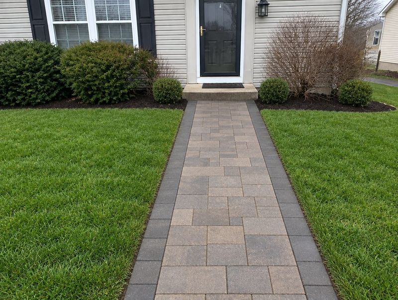
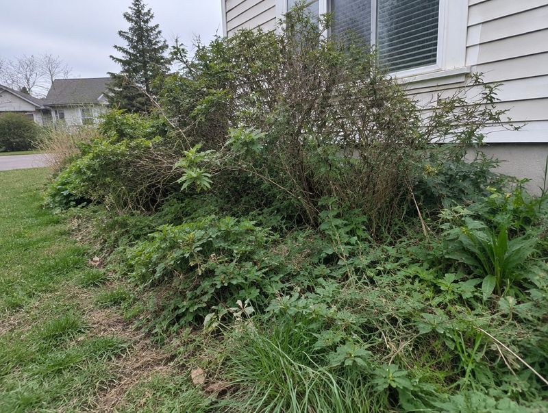
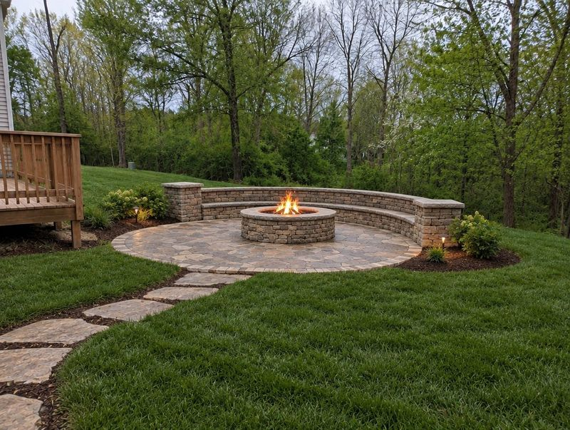
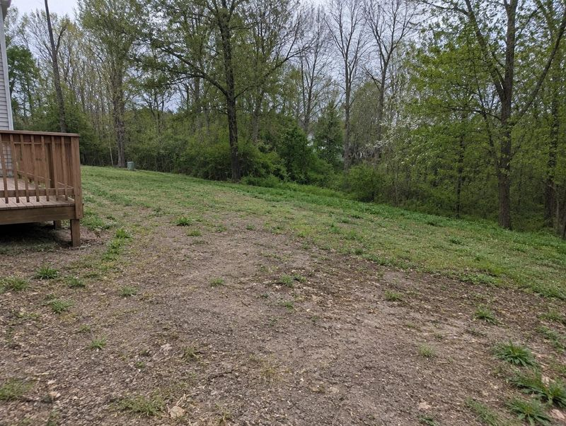
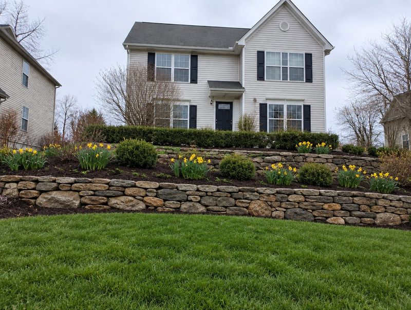
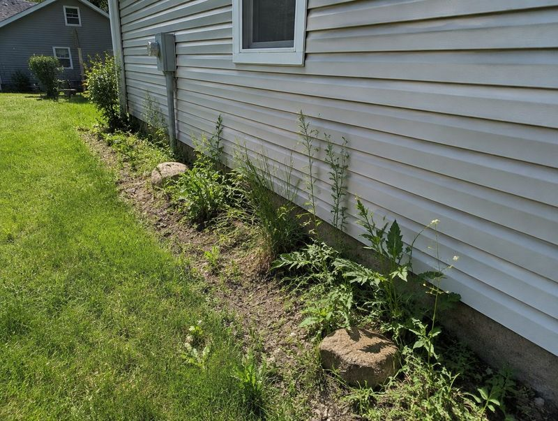
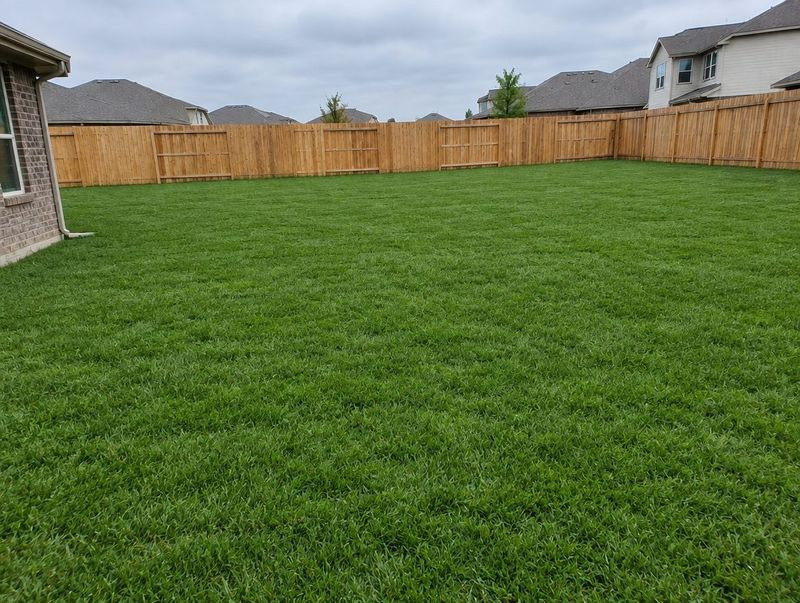

Galería
Arrastre el control, o use las flechas del teclado, para comparar el antes y el después.


Más sobre muros de contención →


Más sobre hardscaping →


Más sobre diseño de paisajes →


Más sobre hardscaping →


Más sobre hardscaping →


Más sobre muros de contención →


Más sobre diseño de paisajes →


Más sobre césped y siembra →
¿Quiere algo así? Solicitar cotización gratis · 610-357-1098